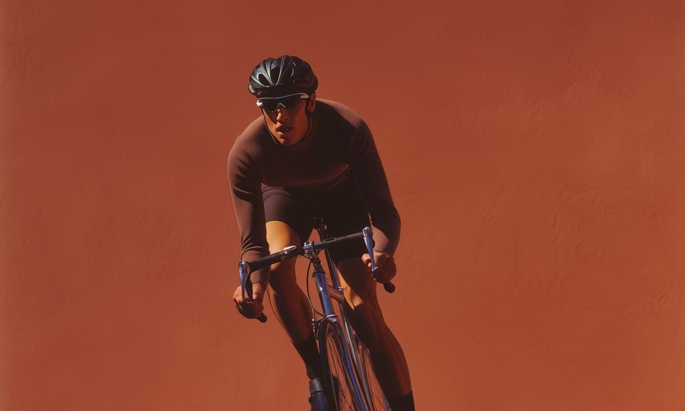

Fragments of thought arranged in sequence become patterns. They unfold
step by step, shaping meaning as they move forward.

A landscape in constant transition, where every shape, sound,
and shadow refuses to stay still. What seems stable begins to
dissolve, and what fades returns again in a new form.
The rhythm of motion carries us forward into spaces that feel
familiar yet remain undefined. Each shift is subtle, yet
together they remind us that nothing we see is ever permanent.
Shadows fold into light. Shapes shift across the frame, reminding us
that stillness is only temporary.